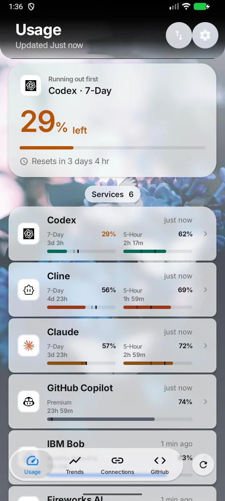
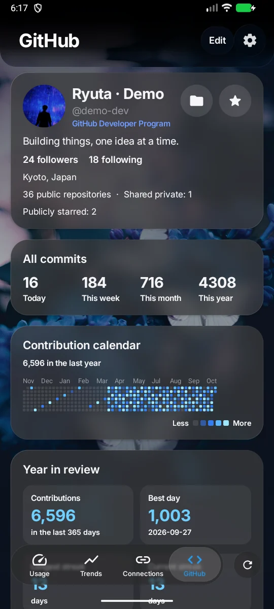
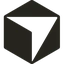
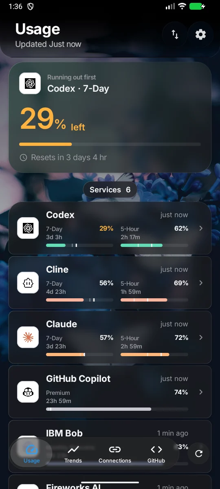
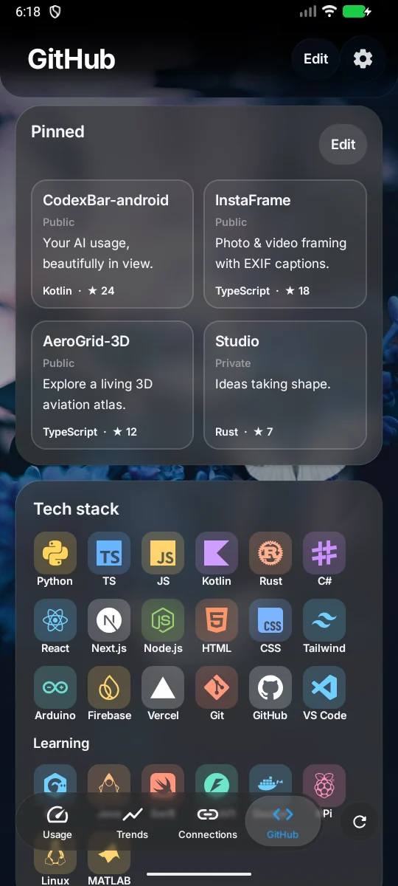
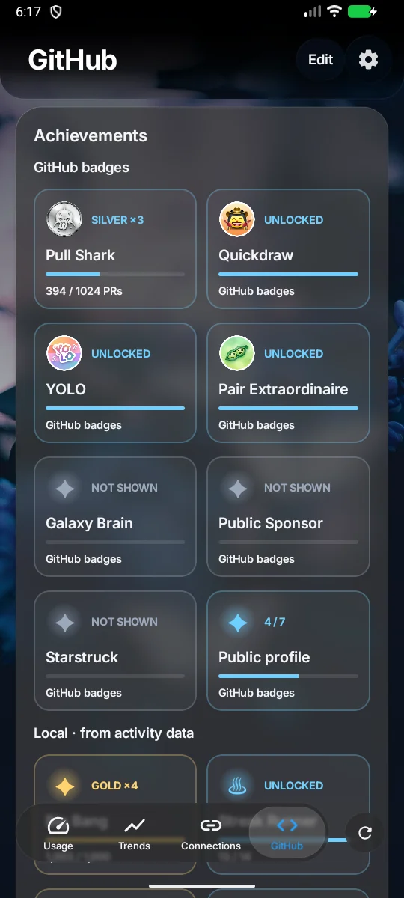

LIQUID GLASS
光も、景色も、
光も、景色も、
あなたらしく。
ライトでも、ダークでも。日替わりのUnsplash写真に、透き通るカードと光の縁が重なります。


バイブコーダーによる、バイブコーダーのためのアプリ。
Codexも、Claudeも。AIの残量、リセット、GitHubの活動をひと目で。アイデアを形にする時間に、もっと集中を。
無料・オープンソース。広告も、トラッカーもなし。

いつものAIを、いつもの場所に。

CursorDeepSeek21サービスに対応。取得できる情報や接続方法は、サービスごとに異なります。
残量を確かめる。使い方を振り返る。作ったものを眺める。タブを選んで、アプリの中を見てみましょう。

複数のAIサービスの残量とリセット時刻をまとめて表示。最初に使い切りそうな枠も、使うペースも、すぐに見つかります。
Androidに、Liquid Glassの透明感を。毎日使うから、細部の心地よさまで。
ライトでも、ダークでも。日替わりのUnsplash写真に、透き通るカードと光の縁が重なります。

隣のページとつながるスワイプ。長押しして滑らせるタブ。軽い振動も、好みに合わせて。
サービスの並び順も、GitHubのウィジェットも。見たい情報が、見たい場所に。
GitHubのプロフィール、日々のコミット、コントリビューションをひとつのダッシュボードに。お気に入りのリポジトリへも、すぐに。
共有・認可した範囲の非公開情報にも対応。リポジトリへの書き込み権限は要求しません。


サービスに合わせて、スマホでの取得とPC連携を選べます。Windowsとつなげば、PCの使用枠・トークン履歴・推定費用も手元へ。
共有履歴・費用・設定操作はWindows v0.71.0以降。PCの起動が必要です。費用は推定値で、請求額とは異なります。
使用枠はスマホだけで確認できます。PCのローカルトークン履歴は、追加のPC連携で表示します。
スマホの接続情報はKeystoreで暗号化。CLI companionは認証情報をPCに残し、使用量など必要な情報だけを共有します。
MITライセンス。アプリもcompanionも、ソースをGitHubで確認できます。
APKをダウンロードして署名などを検証。最後のインストールはAndroidで確認します。
GitHub Releaseから、Android用のAPKをダウンロード。
APKを開き、Androidの確認画面でインストールを許可。
「接続」からAIを追加。必要ならWindowsともペアリング。
APKを開くブラウザーやファイルアプリに「この提供元のアプリを許可」を設定し、Androidのインストール画面で確認してください。インストール後、この許可はオフに戻せます。
更新は既存アプリへの上書きで行います。競合エラーの場合は、同じ公式リリースを使っているか確認してください。データを消す操作の前に、GitHubで状況を相談できます。
通常の更新はアプリの設定からダウンロード・検証できます。初回インストール以外は、ブラウザーを経由する必要はありません。
0.16.1／0.16.2をご利用の方は、今回だけAPKを手動で上書きしてください。ブラウザーで取得が完了しない場合はGitHubアプリから。アンインストールやデータ削除は不要です。
スマホで取得できるサービスは、そのままAndroidで利用できます。サービスごとに対応する認証方法が異なり、CLI companionやWindowsが必要なものもあります。Gemini AppsはWindows取得のみで、Gemini CLIとは別の項目です。
サービスを選んで手順を見る ↑GitHubにログインし、共有するリポジトリを選べます。非公開のコントリビューションには追加のプロフィール読み取り認可を使います。表示範囲は共有先と認可した権限に依存します。
スマホとPCを同じTailscaleネットワークに接続すれば利用できます。スマホのexit nodeは不要です。データを取得する間、PCとWindowsアプリは起動したままにしてください。
いいえ。ローカルのトークン履歴とモデル単価などから計算する参考値です。サブスクリプション料金や実際の請求額とは異なります。取得できる履歴と内訳もサービスによって変わります。
バージョン、Androidのバージョン、操作手順、表示されたエラーを添えてGitHubで相談できます。ログインコードやトークンなどの認証情報は送らないでください。
GitHubで不具合を報告 ↗